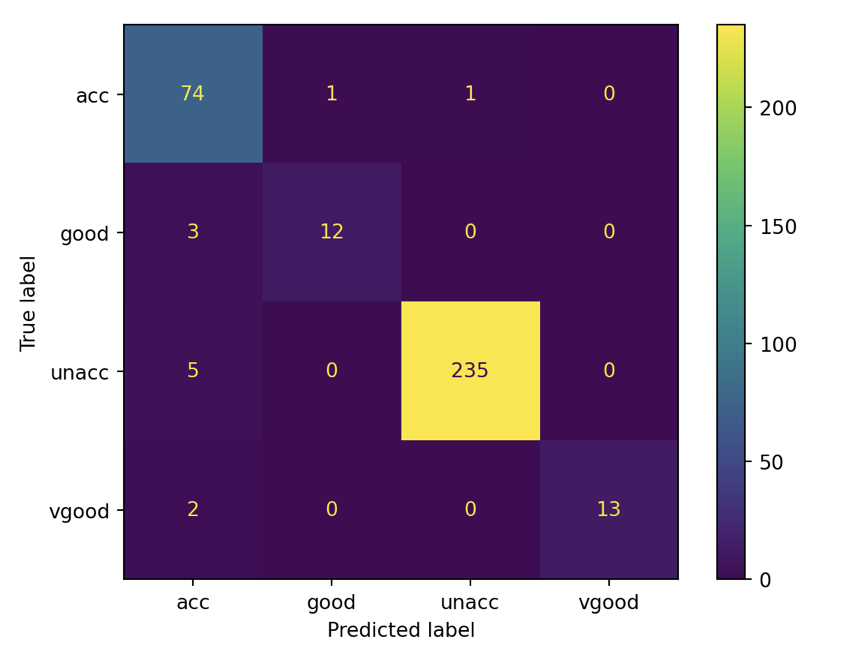

import pandas as pd
from sklearn.model_selection import train_test_split
from sklearn.svm import SVC
from sklearn.metrics import accuracy_score
from sklearn.pipeline import make_pipeline
from sklearn.compose import make_column_transformer
from sklearn.preprocessing import OrdinalEncoder
from sklearn.metrics import classification_report, ConfusionMatrixDisplayImagine a world where your smartphone predicts your next word as you type, where cars drive themselves, and where medical diagnoses are enhanced by machines detecting anomalies invisible to the human eye. These aren’t the works of science fiction—they’re the real-life applications of machine learning.
Machine learning is a transformative field where computers learn patterns from data, enabling them to make predictions, solve problems, and even adapt to new challenges without being explicitly programmed. It’s the invisible engine powering innovations in healthcare, finance, entertainment, and virtually every industry you can think of.
In this tutorial, I will be teaching how to create a classification model (a model that is used to classified an item) using sci-kit learn package. A detail of the example used can be found in the repository here
Prerequisite:
Before proceed to this tutorial, make sure you have these installed in your computer:
- An IDE, e.g. (Visual Studio Code)[https://code.visualstudio.com]
- Python 3.7+(Van Rossum and Drake 2009)
- conda (recommended)(“Anaconda Software Distribution” 2020)
- Pandas(McKinney 2010)
- Scikit-learn(Pedregosa et al. 2011)
Conda is recommended because it is a powerful package and environment management tool. The packages listed above need to be installed in your environment before proceed, you can test by typing the following in your terminal:
#| label: dependencies_check
python --version
#Python 3.11.9
conda list pandas
# packages in environment at /Users/yourname/miniforge3:
#
# Name Version Build Channel
#pandas 2.1.4 pypi_0 pypi
conda list scikit-learn
# packages in environment at /Users/yourname/miniforge3:
#
# Name Version Build Channel
#scikit-learn 1.3.2 pypi_0 pypiIntroduction to the dataset
Imagine you want to buy a car, but you don’t know if the car is worth to buy or not. Before taking out your wallet and writing a cheque, you want to analyze the value for money of the car. From the appearance of it, you can see some attributes, including the number of doors, seating compacity and boot size. Besides, financial cost including buying price and maintenance cost are also important when considering the cost performance. After gathering these information, you hope there exists a robot telling you the car is acceptable or not. The robot you hope is the model we are going to train later this tutorial.
The dataset(Bohanec 1988) we are going to use contains a large number of these information. You can find the data in here. This is a data from UCI machine Learning Repository. You need to download it to your local before continue this tutorial, you can also find it in the repo. I recommed to download it at the data/ of the root of your project.
Load the data
This first thing to do is to load the dataset, open your IDE, create a new python file. We can name it as car_eva.py. Import packages and modules needed for the project as following:
Next, we will need to import our data, you can do it by the following:
colnames = ['buying','maint','doors','persons','lug_boot','safety','class']
raw_data = pd.read_csv("./data/car_data_raw.csv", names=colnames, header = 1)The whole python document will look something like this:
import pandas as pd
from sklearn.model_selection import train_test_split
from sklearn.svm import SVC
from sklearn.pipeline import make_pipeline
from sklearn.compose import make_column_transformer
from sklearn.preprocessing import OrdinalEncoder
from sklearn.metrics import classification_report, ConfusionMatrixDisplay
def main():
colnames = ['buying','maint','doors','persons','lug_boot','safety','class']
raw_data = pd.read_csv("./data/car_data_raw.csv", names=colnames, header = 1)
if __name__ == '__main__':
main()For following steps, you will need to update the main() function. To execute the file, simply type python path-to-py-file to your terminal.
Quick inspection of the data and do analysis on it
The next thing needed to do is do a inspection to the nature of the data. Because we want to create a classification model, we shall make sure that the target we are predicting is a classification data, then we need to see the data type of the attributes:
print(raw_data.head())
print(raw_data.info())As we can see, the dataset have all object datatype, and the target we want to predict is the class of the car. The car attributes is as follow:
- Buying price:
low,med,high,vhigh - Maintenance cost:
low,med,high,vhigh - Number of doors:
2,3,4,5more - Seating capacity:
2,4,more - Boot size:
small,med,big - Safety rating:
low,med,high
The class column includes the following value:
unacc: Unacceptable. Cars that fail to meet basic criteria.acc: Acceptable. Cars that meet minimum requirements.good: Good. Cars that exceed average standards in some aspects.vgood: Very good. Cars that meet the highest standards.
In machine learning, the features are usually denoted as X, and the target is denoted as y, we can do as following:
X = raw_data.drop("class", axis=1)
y = raw_data["class"]Can we start training the model using this data? No! Why? Because if we train the model using all the data here, we will have no data to test it. The golden rule of the machine learning indicates that we shall never use test data to train the model. Therefore, we need to split the data into train set and test set. Luckily, sci-kit learn has a module to split them in one line:
X_train, X_test, y_train, y_test = train_test_split(
X, y, test_size=0.2, random_state=522
)By doing so, we split the data by 20% test and 80% train. Before heading to train the model, the sci-kit learn model will only accept numeric columns to train. We need to transform our categorical columns to numeric before fitting the model. Here, since all columns are ordinal(low, med, high etc.). We can use a sklearn encoder called OrdinalEncoder. This encoder can transform ordinal categorical column value like ‘low’ ‘medium’ ‘high’ to 0, 1, 2:
car_preprocessor = make_column_transformer(
(OrdinalEncoder(categories=[['low','med','high','vhigh']]), ['buying']),
(OrdinalEncoder(categories=[['low','med','high','vhigh']]), ['maint']),
(OrdinalEncoder(categories=[['2','3','4','5more']]), ['doors']),
(OrdinalEncoder(categories=[['2','4','more']]), ['persons']),
(OrdinalEncoder(categories=[['small','med','big']]), ['lug_boot']),
(OrdinalEncoder(categories=[['low','med','high']]), ['safety']),
remainder='passthrough',
verbose_feature_names_out=False
)By doing this, we encode the columns to numeric, which is now good for our model to fit.
Model training
For this example, we are going to use a model called SVC with RBF kernel. You can think of SVM as a tool that draws lines in a way that best separates different categories—in this case, car acceptability levels. As we get deeper into machine learning, we will need to tune the hyperparameter of the model. This process is like looking for a way to adjust car components to make it drive the fastest. Instead of car components, we adjust the hyperparameter of the model. Since this is a beginner tutorial, I will provide a good hyperparameter C is equal to 100 and gamma is equal to 0.1 to this model here.
svc = SVC(C = 1000, gamma = 0.01, random_state=522)
car_pipe = make_pipeline(car_preprocessor, svc)
car_pipe.fit(X_train, y_train)There are other models in sklearn package like Random Forest classifier or KNN classifier. For more models you can check the scikit learn documentation here.
Test our model
Now we have trained our model using the training data, how are we suppose to test the performance of our trained model? Well, remember the test data we splited out earlier this tutorial? Now it’s the time to use it. We can give the features from the test data to our model and let it predict the outcome, and calculate the accuracy of the model. We can use the .score() function of sklearn to do this:
score = car_pipe.score(X_test, y_test).round(3)
print(f"The accuracy of our mode is {score}")The accuracy of our mode is 0.965Besides accuracy, we can create a classification report using sklearn module:
predictions = car_pipe.predict(X_test)
print(classification_report(y_test, predictions)) precision recall f1-score support
acc 0.88 0.97 0.93 76
good 0.92 0.80 0.86 15
unacc 1.00 0.98 0.99 240
vgood 1.00 0.87 0.93 15
accuracy 0.97 346
macro avg 0.95 0.90 0.92 346
weighted avg 0.97 0.97 0.97 346
The precision here means how many predictions are correct and recall means how many relevant items are identified. F1 score gives a balance between the 2 metrics. Given the high score and accuracy here, we can say that the model we built is powerful and reliable. We can also see a detail here, how many cars we are doing correct and how many we are doing incorrect, just use a confusion matrixFigure 3:
cm = ConfusionMatrixDisplay.from_estimator(
car_pipe,
X_test,
y_test,
values_format="d",
)

Now, let’s try to predict using our model:
#Create 2 car with one obviously good and one obviously bad
predict_data = pd.DataFrame({
'buying': ['low', 'high'],
'maint': ['med', 'vhigh'],
'doors': ['4', '2'],
'persons': ['4', '2'],
'lug_boot': ['big', 'small'],
'safety': ['high', 'low']
})
predictions = car_pipe.predict(predict_data)
print("Predictions for the new data:")
for i, prediction in enumerate(predictions):
print(f"Sample {i+1}: {prediction}")Predictions for the new data:
Sample 1: vgood
Sample 2: unaccThe result is good and accurate!
Conclusion
In this blog, we demonstrated an end-to-end classification pipeline:
- Loaded and explored the Car Evaluation dataset.
- Transformed categorical features and split data for training/testing.
- Trained SVC model with RBF kernal.
- Evaluated them using accuracy, classification reports, and confusion matrices.
This is a shorter way of training a well-functional model. In real life you may need to tune the model, and do feature engineer in order to get a robust model.
This framework can be used for any classification task: - Swap in your own dataset. - Adjust the preprocessing steps. - Select and tune models based on your domain needs. With these building blocks, you’re well on your way to solving practical ML classification challenges—whether you’re predicting car quality, diagnosing diseases, or detecting fraudulent transactions.
References
“Anaconda Software Distribution.” 2020. Anaconda Documentation. Anaconda Inc. https://docs.anaconda.com/.
Bohanec, Marko. 1988. “Car Evaluation.” UCI Machine Learning Repository.
McIntosh, Jil. 2022. “12 Tips for the First-Time Car Buyer.” AutoTrader.ca. https://www.autotrader.ca/editorial/20220214/12-tips-for-the-first-time-car-buyer/.
McKinney, Wes. 2010. “Data Structures for Statistical Computing in Python.” In Proceedings of the 9th Python in Science Conference, edited by Stéfan van der Walt and Jarrod Millman, 56–61. https://doi.org/ 10.25080/Majora-92bf1922-00a .
Pedregosa, F., G. Varoquaux, A. Gramfort, V. Michel, B. Thirion, O. Grisel, M. Blondel, et al. 2011. “Scikit-Learn: Machine Learning in Python.” Journal of Machine Learning Research 12: 2825–30.
Van Rossum, Guido, and Fred L. Drake. 2009. Python 3 Reference Manual. Scotts Valley, CA: CreateSpace.